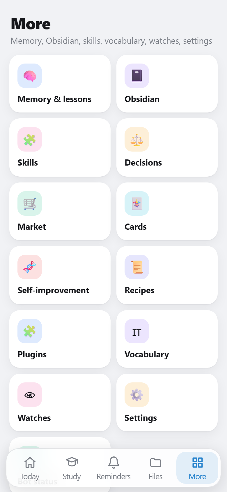

AI in locale con strumenti
Un agente che sceglie da solo tra oltre 100 strumenti (promemoria, file, browser, Classroom, email…). Valutato con test sul modello reale: ~98% di scelte corrette.
Studente di informatica · in Italia
Creo bot Telegram, siti web e assistenti di intelligenza artificiale che girano sul mio computer — senza servizi a pagamento, con attenzione a sicurezza e privacy.
Sono ucraino e vivo in Italia, dove frequento il terzo anno di un indirizzo di informatica. Mi piace trasformare problemi reali — compiti, voti, appunti, annunci online — in strumenti che li risolvono da soli.
Il mio progetto principale è MikyCore, un assistente personale con intelligenza artificiale locale che uso ogni giorno per la scuola e non solo. Lo sviluppo con un approccio "da professionista": test automatici, sicurezza, codice leggibile.
Progetto principale
Un assistente personale su Telegram con un'intelligenza artificiale che gira interamente sul mio PC (GPU da 8 GB): nessun abbonamento, nessun dato inviato a servizi esterni. Ha un'app integrata (Telegram Mini App) e impara dal modo in cui lo uso.



Un agente che sceglie da solo tra oltre 100 strumenti (promemoria, file, browser, Classroom, email…). Valutato con test sul modello reale: ~98% di scelte corrette.
Nota dove sbaglia, propone regole, "ricette" e perfino nuovi plugin in Python. Ogni plugin gira in una sandbox isolata e si attiva solo dopo la mia conferma.
Legge gli annunci, calcola il prezzo di mercato per modello e configurazione (CPU, RAM, generazione), segnala truffe e mi avvisa solo per i veri affari.
Lezioni → appunti strutturati in Obsidian, flashcard automatiche, simulazione di interrogazioni con voto, piano di studio verso le verifiche.
Genera diagrammi di flusso verificati eseguendoli, e un interprete .fprg scritto da zero che trova l'errore e il blocco esatto in cui si trova.
Conferma per le azioni rischiose, protezione da prompt injection, password mai passate all'AI, nessun aggiramento delle protezioni dei siti.
Python · python-telegram-bot · Ollama (Qwen3 8B, Qwen3-VL) · Playwright · faster-whisper · Telegram Mini App (JavaScript, CSS) · Obsidian · Google APIs · 46 suite di test + valutazioni sul modello reale
Piccoli progetti fatti bene, con prezzi da studente. Scrivimi e ne parliamo.
Prenotazioni, menù, promemoria per i clienti, risposte automatiche, mini app — per negozi, palestre, insegnanti.
Siti vetrina veloci e curati, adatti al telefono, pubblicati gratis su GitHub Pages o sul tuo dominio.
Testi, lettere, moduli e aiuto con la burocrazia italiana per chi parla ucraino (traduzioni non giurate).
Python, Flowgorithm, basi di programmazione per studenti più giovani — con esercizi e quiz.
Il modo più veloce per raggiungermi:
I contatti arriveranno presto.